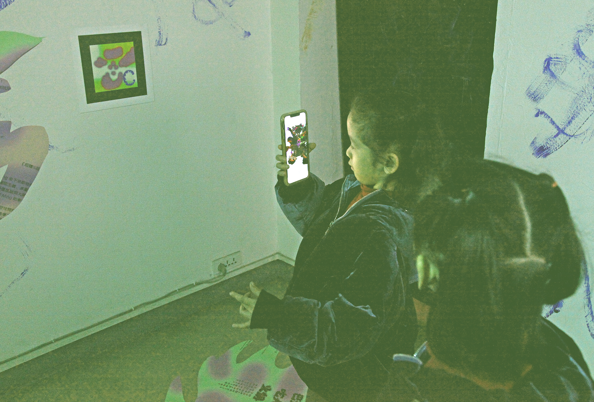
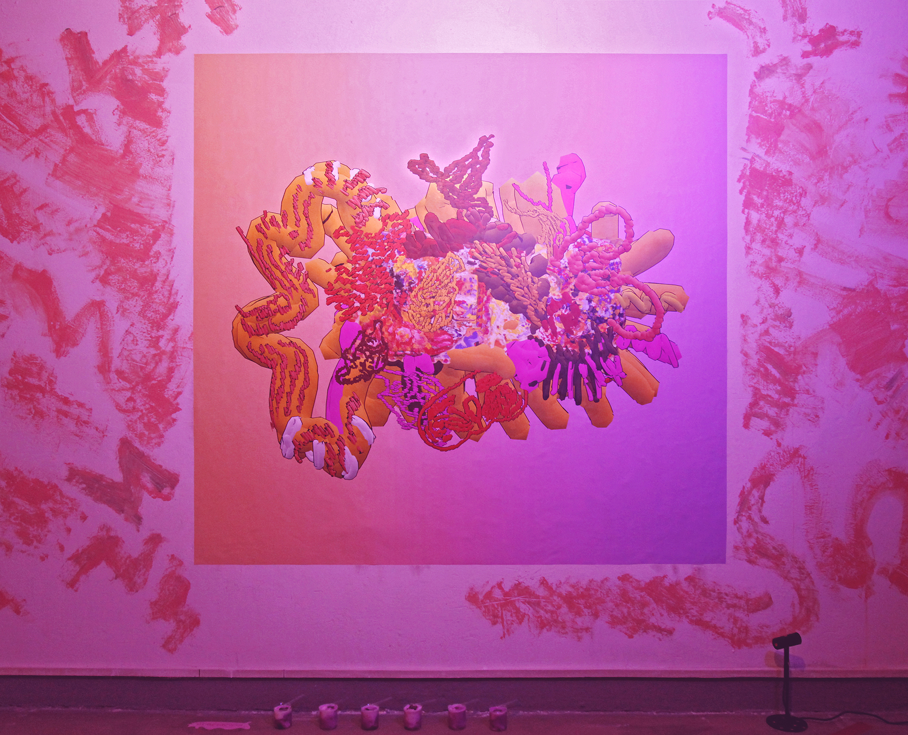
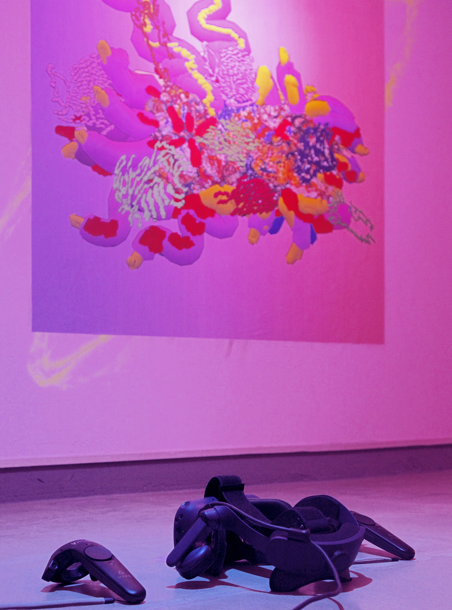
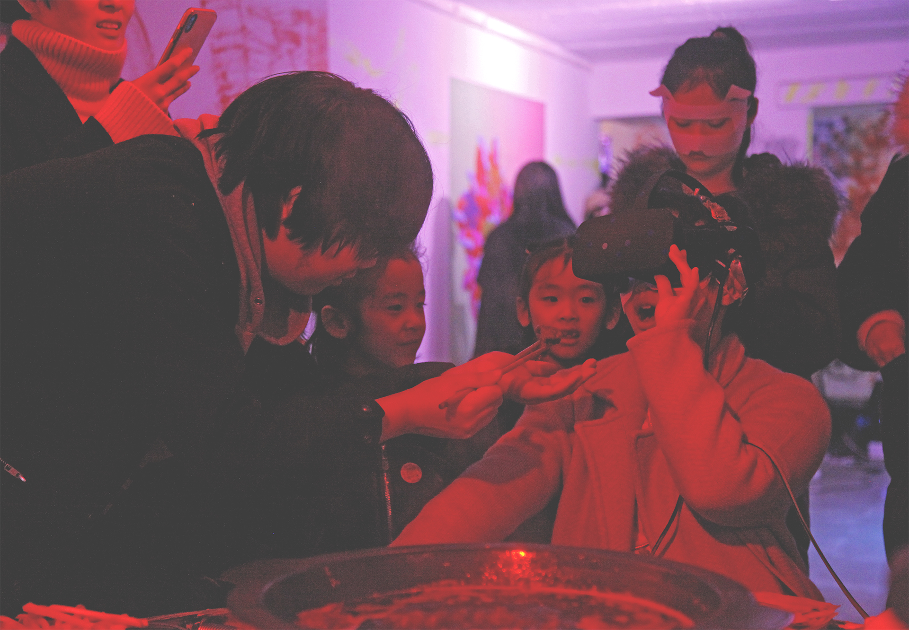
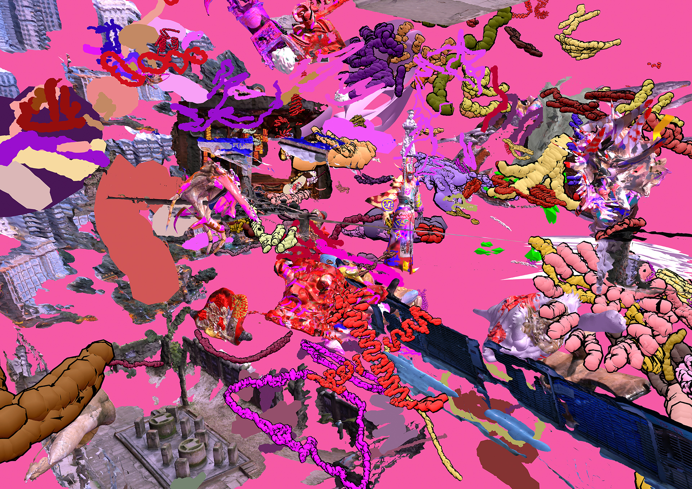
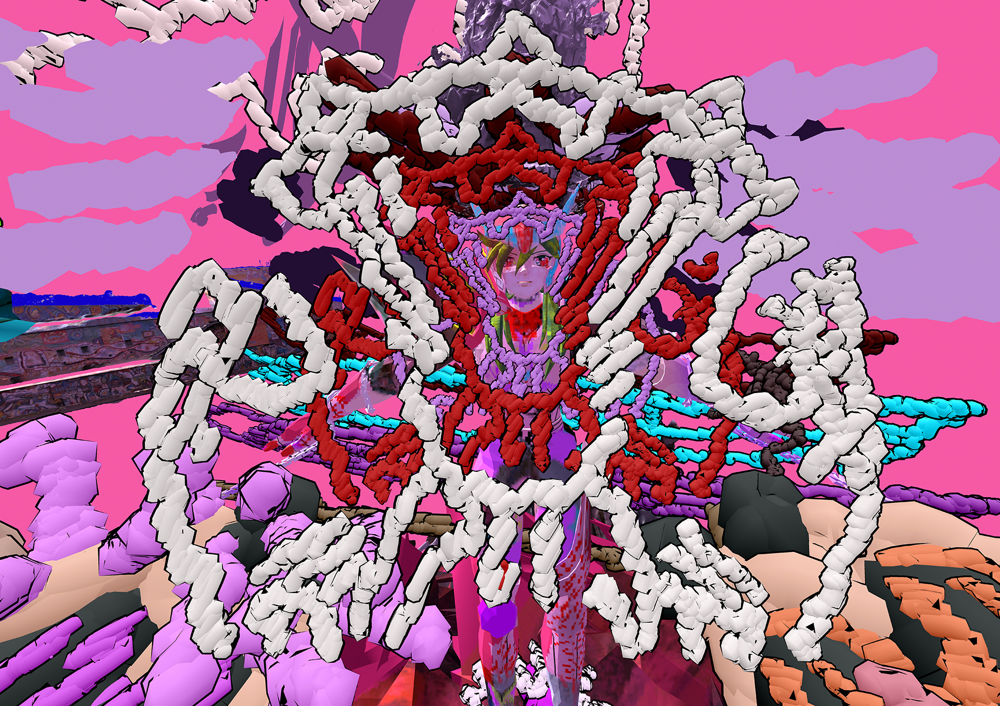

HyperBody Demo, VR game test recording, 01:20, Chongqing, 2019（備用鏈接：av41930854）
超體 / HYPERBODY
The research is undertaken by art and architectural practice and seeks to provide a definition of ‘HyperBody’: a hybrid of architecture, anatomy, anthropology and game.
It investigated three specific geographic locations in China that each presents a specific type of excess: The Hyper-religious Body in the Dunhuang Caves, Gansu Province, the Hyper-sexual Body in Beijing, and the Hyper-gastronomical Body in Chongqing. Each offers an expansion of the maximalism research approach, based on visual excess. By conducting field work at these sites, we tried to redefine the spaces around and beyond the human body in order to ultimately lead to the ‘HyperBody’ – a multi-reality architectural space that mediates between the physical and virtual spheres. We built on the knowledge of the bridges and interstices between architecture and the internet, as well as the creation of digital game spaces, by consulting digital anthropologists and also architectural and design theorists.
實驗公告 / Press Release: http://chongqingdac.org/article/page?id=276
Terms:
Techno-Orientalism of new media representations supports the encounter of technological and cultural productions specifically within an Asian framework and expand the effect of schizophrenic significations of anime, comic and games.
Hyperisation is a process of hybridising non-homogeneous physical and virtual spaces.
Gamification is to apply multiple game culture into physical context and vice versa in order to accelerate the dissolution of physical and virtual spaces.
Referring to the etymology of index (forefinger) and digital (finger), indexicality in digital anthropology informs multiple bodies should re-create a more advanced understanding of game space.
Research Questions:
1. How can post-humanism and techno-Orientalism contribute to a better definition of maximalism in art and architecture?
2. How can a hybrid of pictorial space, architectural space and game engine technology inform a better understanding of hyperisation and gamification?
3. How can VR (virtual reality) and AR (augmented reality) technology better inform an understanding of body without organs i.e. HyperBody?
Methodology:
The project takes a number of anthropological, architectural, new media (anime, comic and games) and body materials to remix, recreate and rediscover as the subject for, as well as context of, the research. It will use multiple media starting with drawing and painting before extending to 3D scan, VR filming, painting and game design. This non-hegemonic conglomerate below crosses over from the academic sphere to everyday scenarios and encompasses various subcultures.
Practice:
HyperBody II: The Hyper Anuttara and the Anatomy of Techno-Sexual Power, 10th. November, 2018 – 1st. December, 2018, Minority Space, Beijing, China
HyperBody III: The HyperFeast of Chungking Cannibalism Hotpot, 20th. January, 2019 – 24th. January, 2019, Dimensions Art Centre, Chongqing, China
The HyperFeast of Chungking Cannibalism Hotpot is a ‘multi-reality spatial experiment’ both for the research output of the third field study site in Chongqing and a more comprehensive assemblage of art and architectural work-in-progress under the Digital Earth theoretical framework since October, 2018. This experiment includes 4 physical levels and 7 virtual levels intersected together that encourages audiences to scan, paint and eat during the event.
It includes:
Physical Level 1: Green / Physical Level 2: Orange / Physical Level 3: Pink / Physical Level 4: Red
Virtual Level 1: Rubic’s Cube Mansion / Virtual Level 2: Parallel Cave / Virtual Level 3: 465 Cave / Virtual Level 3.5: Underwater Lama Temple / Virtual Level 4: Anatomy of Embryonic Sexual Power / Virtual Level 5: Ba&Shu Binary Star HyperBody: Hashashin / Virtual Level 6: Ba&Shu Binary Star HyperBody: Shun / Virtual Level 6.5: HyperFeast of Chungking Cannibalism Hotpot
 HyperBody Physical Level 1 (Green): VR Instructions and AR Totems (Markers), Photograph, Chongqing, 2019 © Burning Bear
HyperBody Physical Level 1 (Green): VR Instructions and AR Totems (Markers), Photograph, Chongqing, 2019 © Burning Bear
HyperBody Physical Level 1 (Green): 'Cakrasamvara 001' Pops Up from AR Totem, Photograph, Chongqing, 2019 © Burning Bear
 HyperBody Physical Level 1 (Green): 'Hashashin' Pops Up from AR Totem, Photograph, Chongqing, 2019 © Burning Bear
HyperBody Physical Level 1 (Green): 'Hashashin' Pops Up from AR Totem, Photograph, Chongqing, 2019 © Burning Bear
 HyperBody Virtual Level 1 : Rubic’s Cube Mansion - Welcome to HyperBody, Screenshot, Chongqing, 2019
HyperBody Virtual Level 1 : Rubic’s Cube Mansion - Welcome to HyperBody, Screenshot, Chongqing, 2019
HyperBody Physical Level 2 (Orange): Hyper-sexual Body: Androcur with 6 Cannibalistic Pink Yogurts by Sense Health Management Studio, Photograph, Chongqing, 2019 © Burning Bear
 HyperBody Physical Level 2 (Orange): Painting inside HyperBody Virtual Level 3: 465 Cave by Oculus Rift, Photograph, Chongqing, 2019 © Burning Bear
HyperBody Physical Level 2 (Orange): Painting inside HyperBody Virtual Level 3: 465 Cave by Oculus Rift, Photograph, Chongqing, 2019 © Burning Bear
 HyperBody Virtual Level 3: 465 Cave - Bodhisattva 001, Screenshot, Chongqing, 2019
HyperBody Virtual Level 3: 465 Cave - Bodhisattva 001, Screenshot, Chongqing, 2019
 HyperBody Virtual Level 3: 465 Cave - Cakrasamvara 001, Screenshot, Chongqing, 2019
HyperBody Virtual Level 3: 465 Cave - Cakrasamvara 001, Screenshot, Chongqing, 2019
 HyperBody Physical Level 3 (Pink): Playing inside 7 HyperBody Virtual Levels by HTC Vive Pro, Photograph, Chongqing, 2019 © Burning Bear
HyperBody Physical Level 3 (Pink): Playing inside 7 HyperBody Virtual Levels by HTC Vive Pro, Photograph, Chongqing, 2019 © Burning Bear
HyperBody Physical Level 3 (Pink): Hyper-sexual Body: Aldactone with HTC Vive Pro, Photograph, Chongqing, 2019 © Burning Bear
 HyperBody Physical Level 4 (Red): Hyper-gastronomical Body: Physical Chongqing Hot Pot with Electric Button Entering into Virtual Hot Pot, Photograph, Chongqing, 2019 © Burning Bear
HyperBody Physical Level 4 (Red): Hyper-gastronomical Body: Physical Chongqing Hot Pot with Electric Button Entering into Virtual Hot Pot, Photograph, Chongqing, 2019 © Burning Bear
HyperBody Physical Level 4 (Red): Hyper-gastronomical Body: Feeding with both Physical and Virtual Chongqing Hot Pot Food, Photograph, Chongqing, 2019 © Burning Bear
 HyperBody Physical Level 3 (Pink) and 4 (Red), Photograph, Chongqing, 2019 © Burning Bear
HyperBody Physical Level 3 (Pink) and 4 (Red), Photograph, Chongqing, 2019 © Burning Bear
HyperBody Virtual Level 6: Hashashin, Screenshot, Chongqing, 2019
HyperBody Virtual Level 7: Shun, Screenshot, Chongqing, 2019
（某些影像作品需要翻墙 / Some hyperlinks might not work in certain countries）